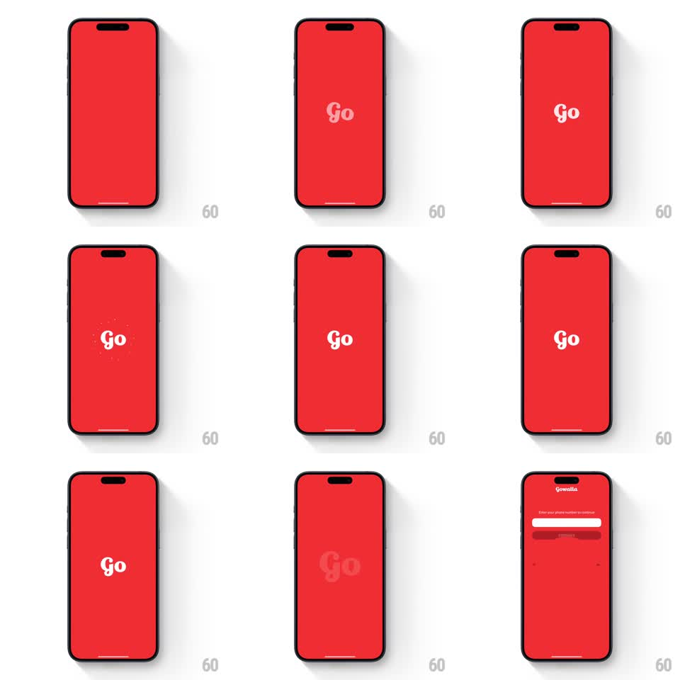

Media
Frame-by-frame

Rebuild this animation 1:1: Gowalla's splash - a solid red screen where the white "Go" wordmark materializes, pulses with a dotted ring, then shrinks into a map marker as the red field collapses into the map or the sign-in screen underneath.

Rebuild this animation 1:1: Gowalla's splash - a solid red screen where the white "Go" wordmark materializes, pulses with a dotted ring, then shrinks into a map marker as the red field collapses into the map or the sign-in screen underneath. ## Integration Integration: stack-agnostic spec - springs given as stiffness/damping, timed motions as duration + curve; map every value to your framework and animation library of choice. ## Scene Solid bright red screen. Center: the white bubbly "Go" wordmark. A dotted white ring flashes around it at one point. The end state cuts to the next screen (a red sign-in page with the small "gowalla" header and a phone-number field, or the map), the red persisting as the app's brand field. ## Motion spec Pattern: brand-mark pulse into a screen handoff. - The wordmark fades in at center (300ms, ease-out) and settles. - A dotted ring sparks around the wordmark once - dots scale in around the mark (~250ms, staggered radially) and fade - the single pulse beat. - The wordmark holds (~600ms), then dims slightly (opacity to ~0.15) as the transition begins. - The red field resolves into the next screen: either the sign-in layout fades in over it (header, field, and button pieces staggering in ~80ms apart) or the red shrinks into a pin that lands on the map. ## Calibration - One pulse only. Repeating the ring reads as a loading spinner and cheapens the brand mark. - Total splash around 1.5 to 2 seconds. ## Reduced motion Wordmark fades in, holds 800ms, crossfades to the next screen. ## Don't miss - The red is the brand - saturated, full-bleed, and unchanged in hue into the next screen. - The wordmark's dim-to-ghost moment bridges the transition; a hard cut loses the continuity.